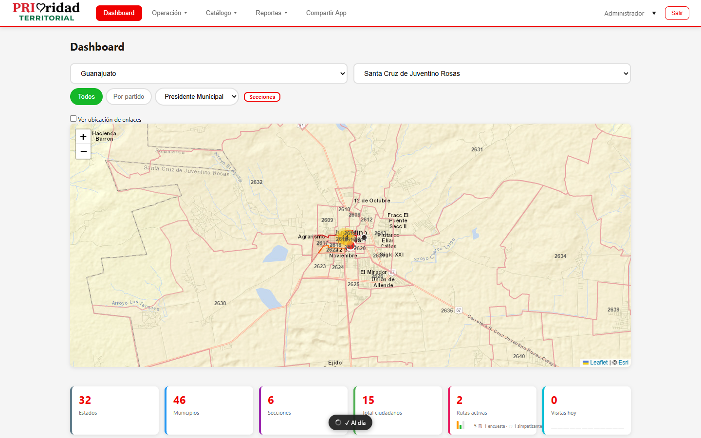
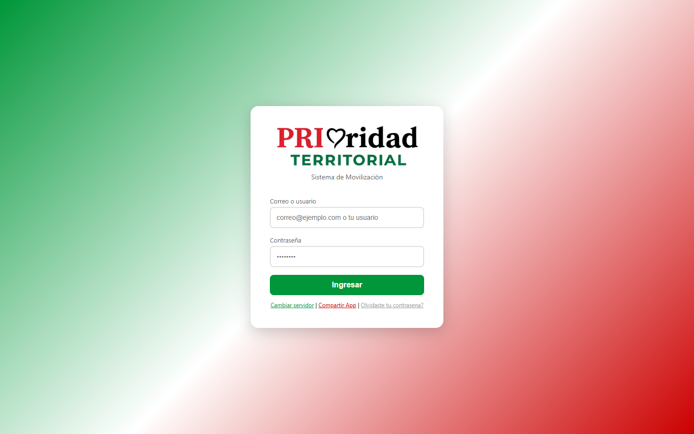
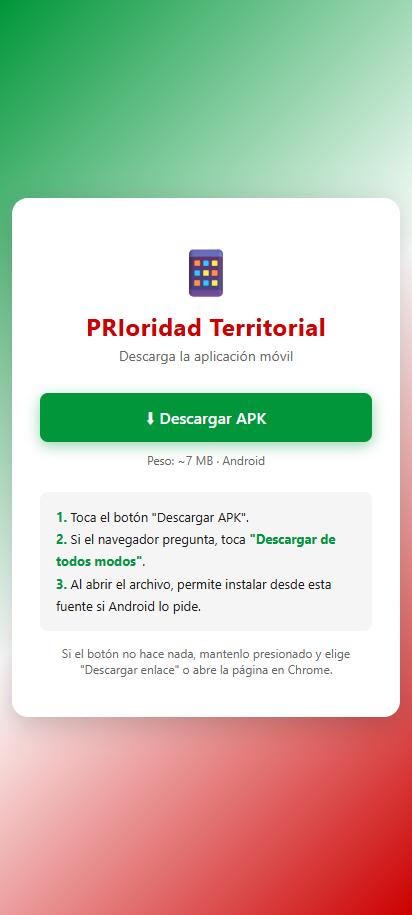

PRIoridad Territorial
Manual General de Acceso
Plataforma de Movilización Política - Sistema Colmena
Versión 1.0 | Agosto 2026
Contenido
1. Introducción
PRIoridad Territorial es una plataforma integral de gestión política que permite:
- Captura y gestión de ciudadanos simpatizantes
- Creación y ejecución de rutas de campo
- Aplicación de encuestas ciudadanas
- Seguimiento de comprometidos por casilla
- Reportes y estadísticas en tiempo real
- Seguimiento electoral por sección y casilla
El sistema está disponible tanto como aplicación web (accesible desde cualquier navegador) como APK para dispositivos Android.
2. Requisitos Mínimos
Para acceso vía navegador web
- Navegador actualizado: Google Chrome, Mozilla Firefox, Microsoft Edge o Safari
- Conexión a internet estable
- Resolución mínima: 1280 x 720 píxeles
Para acceso vía APK (Android)
- Sistema operativo Android 7.0 o superior
- Al menos 100 MB de espacio libre
- Conexión a internet (WiFi o datos móbiles)
- Permiso de instalación de apps de fuentes desconocidas (solo primera vez)

3. Acceso vía Navegador Web
1 Abre tu navegador web favorito (Chrome, Firefox, Edge).
2 En la barra de direcciones, escribe la siguiente URL:
https://www.prioridadterritorial.com
3 Se cargará automáticamente la página de inicio de sesión.

Consejo: Puedes agregar la página a tus favoritos o crear un acceso directo en el escritorio para acceso rápido.
4. Acceso vía APK (Android)
4.1 Descargar la APK
1 Desde tu teléfono Android, abre el navegador y ve a:
https://www.prioridadterritorial.com/descargar.html
2 Toca el botón verde "Descargar APK".
3 Aceptar la descarga cuando el navegador te lo solicite.

4 Una vez descargado, toca el archivo
PRIoridadTerritorial.apk en tu gestor de archivos o en las notificaciones.
5 Si es la primera vez, Android pedirá permiso para instalar apps de fuentes desconocidas:
- Toca "Configuración"
- Activa "Permitir desde esta fuente"
- Regresa y toca "Instalar"
6 Toca "Instalar" y espera a que termine.
7 Toca "Abrir" para iniciar la app.
4.2 Compartir la APK
Desde dentro de la app, puedes compartir la APK con otros usuarios:
- Toca el botón "Compartir App" en la esquina superior derecha
- Se mostrará un código QR que otros pueden escanear
- También puedes copiar el enlace y enviarlo por WhatsApp
5. Iniciar Sesión
1 En la pantalla de login, ingresa tu correo electrónico o nombre de usuario en el primer campo.
2 Ingresa tu contraseña en el segundo campo.
3 Toca el botón "Ingresar".
Dato importante: Puedes iniciar sesión con tu correo electrónico, tu nombre completo o tu nombre de usuario. Todos funcionan para acceder.
Importante: Si ingresas datos incorrectos 3 veces, tu cuenta podría bloquearse temporalmente. Contacta a tu coordinador si esto ocurre.
6. Acceso Biométrico (Huella Dactilar)
Si tu dispositivo lo permite, puedes configurar el acceso por huella dactilar para iniciar sesión más rápido.
1 Inicia sesión normalmente con tu correo y contraseña.
2 Si tu dispositivo es compatible, aparecerá un prompt preguntando si deseas guardar tus credenciales biométricas.
3 Toca "Guardar" y coloca tu huella en el sensor.
4 La próxima vez que abras la app, podrás tocar "Acceder con huella" en lugar de escribir tu contraseña.
7. Cambiar Contraseña
1 Haz clic en tu nombre de usuario en la esquina superior derecha.
2 Selecciona "Cambiar contraseña".
3 Ingresa tu contraseña actual.
4 Ingresa tu nueva contraseña y confírmala.
5 Toca "Guardar".
8. Recuperar Contraseña
1 En la pantalla de login, toca ¿Olvidaste tu contraseña?
2 Ingresa tu correo electrónico registrado.
3 Toca "Enviar solicitud".
4 Tu solicitud será enviada a un administrador quien te generará una nueva contraseña temporal.
9. Cerrar Sesión
1 Haz clic en tu nombre de usuario en la esquina superior derecha.
2 Selecciona "Cerrar sesión".
3 Serás redirigido a la pantalla de login.
Importante: Si usas la app en el celular y la cierras sin cerrar sesión, tu sesión permanecerá activa por 24 horas. Para cerrar completamente, usa siempre la opción "Cerrar sesión".
10. Resumen de Roles
El sistema cuenta con 6 roles, cada uno con diferentes permisos:
| Rol | Descripción | Acceso Principal |
|---|---|---|
| Administrador | Control total del sistema | Todo: catálogos, usuarios, reportes, configuración |
| Coordinador | Gestión operativa regional | Usuarios, rutas, campañas, reportes, catálogos |
| Enlace de Campo | Ejecución de rutas en terreno | Mi Ruta, Ciudadanos, Incidencias |
| Capturista | Registro de ciudadanos | Ciudadanos (solo captura) |
| Seccional | Supervisión de capturistas | Dashboard, Ciudadanos, Metas, Incidencias |
| Representante | Gestión de casilla | Casilla, Incidencias |
Nota: Consulta el manual específico de tu rol para información detallada sobre las funcionalidades disponibles.
11. Soporte
Si experimentas algún problema:
- Verifica tu conexión a internet - La mayoría de los errores se resuelven con una conexión estable
- Recarga la página (Ctrl+R o F5 en web, o cierra y abre la app en Android)
- Actualiza la APK - Descarga la versión más reciente desde la página de descarga
- Contacta a tu coordinador o administrador para problemas con tu cuenta